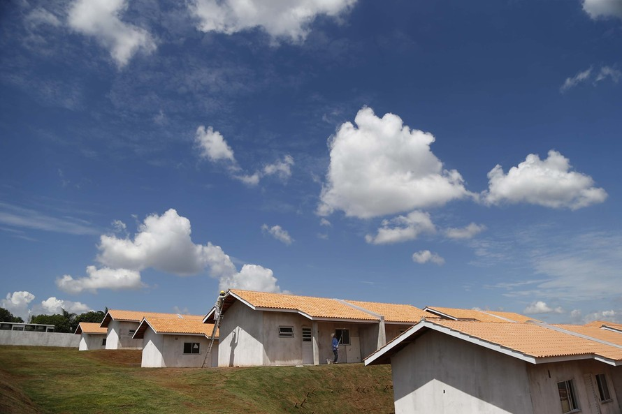

Prefeitura confirma entrega do Condomínio do Idoso dia 15 de setembro
São 40 casas exclusivas para moradores da terceira idade em formato de loteamento fechado e sob um programa de aluguel social

As obras do condomínio do idoso no bairro Três Lagoas, na região Nordeste de Foz do Iguaçu, serão entregues no dia 15 de setembro. A data foi confirmada no último sábado (28) pelo prefeito Chico Brasileiro, durante o programa "Foz em Ação", na Rádio Cultura. Ao todo, serão entregues 40 unidades em conjunto com a Companhia de Habitação do Paraná (Cohapar)
"Não é apenas um residencial, um conjunto habitacional, é verdadeiramente um condomínio voltado ao idoso", disse Chico Brasileiro. Este tipo de estrutura é inédita no país, ressaltou. "Além das moradias, tem ainda um centro comunitário e outros equipamentos que garantem a qualidade de vida nesta fase tão importante da vida", pontuou.
O condomínio faz parte do plano municipal que inclui ainda mais 100 moradias em construção pela Cohapar no Residencial Lagoa Dourada, prevê a regularização de nove mil imóveis e de outras 1,5 mil casas do programa Casa Fácil Paraná, adiantou o prefeito. Em um ano e meio, a gestão Chico Brasileiro já entregou mais de 1,1 mil moradias em Foz do Iguaçu.
"Todos sabem que casa própria significa dignidade e maioria já entregue em Foz é para as famílias que mais precisam de uma moradia, de continuar construindo suas vidas na cidade em que criaram ou estão criando seus filhos", completou.
A cidade tem o maior plano de habitação do interior do país, segundo Brasileiro, graças a esse esforço e entendimento com os governos estadual e federal. "Hoje, a prefeitura de Foz é referência do bom uso do dinheiro público, das contas aprovadas no TCE e das certidões que permitem executar um plano de obras dessa envergadura", disse.
Casas adequadas
No condomínio, são 40 casas exclusivas para moradores da terceira idade em formato de loteamento fechado e sob um programa de aluguel social. O investimento da Cohapar atingiu R$ 4,3 milhões.
As casas têm 42 metros quadrados e foram construídas em duplas, conjugadas. São de alvenaria, inclusive a laje, levando em consideração as necessidades climáticas do bairro Três Lagoas, às margens do Lago de Itaipu, e de durabilidade.
Os imóveis têm sala, cozinha, um quarto e um banheiro, além de uma lavanderia externa, projetados para abrigar um idoso ou um casal. As unidades também serão entregues com piso, acabamentos e todas as instalações elétricas e hidráulicas necessárias para o idoso iniciar a mudança de imediato.
Data da publicação:30/08/2021